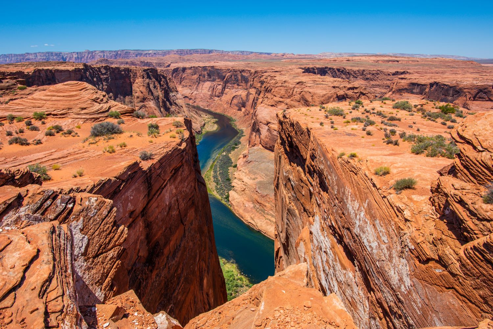
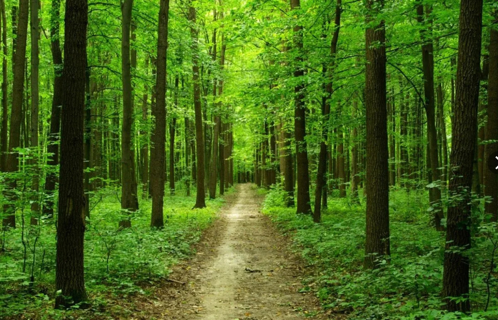
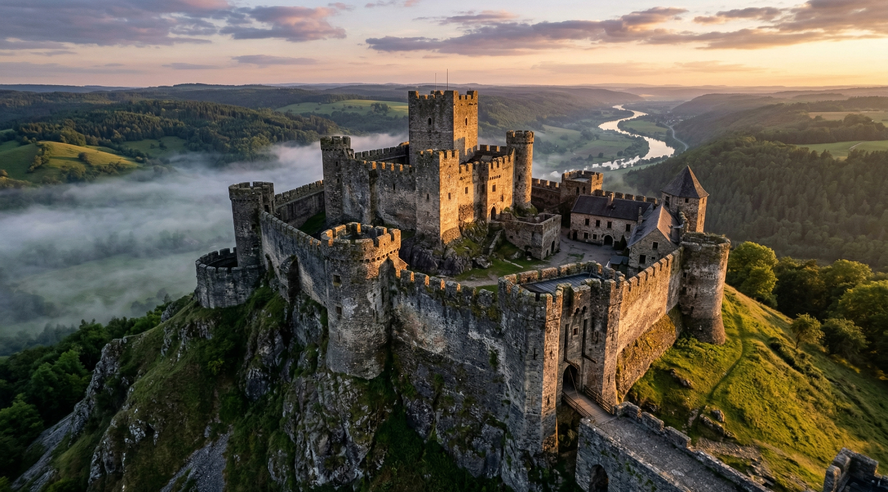
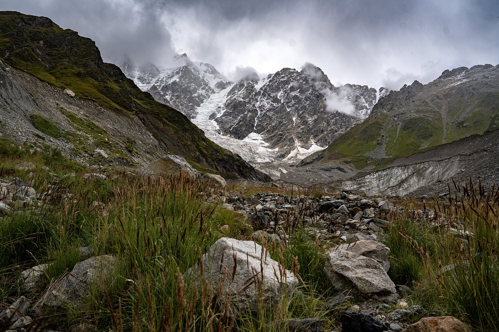

Ниже представлены 4 доступных направления. Внимательно ознакомьтесь с уровнем сложности перед бронированием!
1. Таинственный каньон
Место проведения: Мраморный каньон и экотропа «Горная сказка»
Продолжительность: 10 часов
Уровень сложности: Легкий
Описание: Прогулка по оборудованным деревянным настилам вдоль величественных мраморных скал и посещение заброшенных штолен.

Рис. 1 — Центральный водоем Таинственного каньона в лучах солнца.
2. Тропа Древних Кедров
Место проведения: Реликтовый лесной массив «Зеленый Бор»
Продолжительность: 12 часов
Уровень сложности: Средний
Описание: Настоящее погружение в дикую природу. Маршрут проходит по холмистой лесной местности через подвесные переправы.

3. Крепостной Вал
Место проведения: Историко-археологический комплекс «Старый Острог»
Продолжительность: 8 часов
Уровень сложности: Легкий
Описание: Увлекательная экскурсия по частично разрушенным руинам средневековой каменной крепости с местным гидом.

4. Пик Ветров
Место проведения: Скальное плато «Высокий Утес»
Продолжительность: 14 часов
Уровень сложности: Высокий
Описание: Интенсивный и долгий подъем на вершину холма, откуда открывается потрясающий вид на слияние двух крупных рек.
